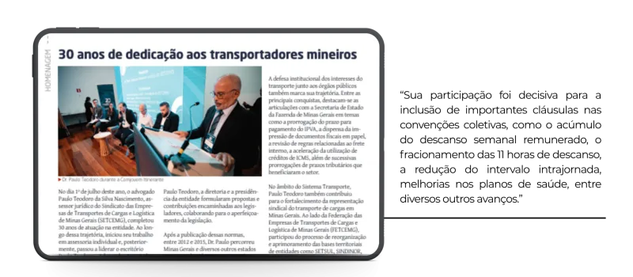
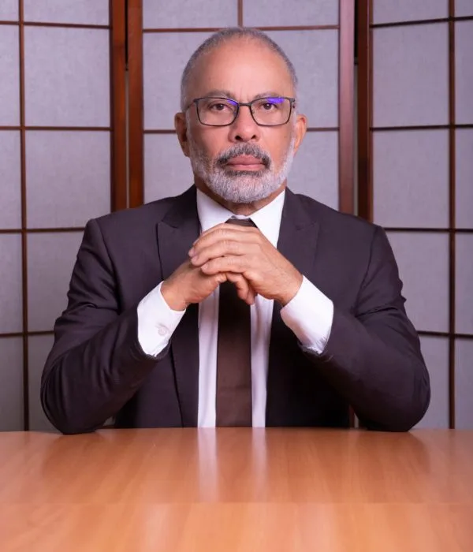

SETCEMG homenageia Dr. Paulo Teodoro pelos 30 anos de atuação em defesa do Transporte Rodoviário de Cargas
O escritório Paulo Teodoro Advogados Associados recebeu com muita honra a homenagem prestada pelo Sindicato das Empresas de Transportes de Cargas e Logística de Minas Gerais (SETCEMG) ao nosso sócio fundador, Dr. Paulo Teodoro, em reconhecimento aos seus 30 anos de atuação como assessor jurídico da entidade.
Publicada na Edição nº 285 do Informativo Minas Transportes, a homenagem relembra uma trajetória construída ao lado do setor transportador, marcada pela participação em importantes avanços jurídicos e institucionais que contribuíram para o fortalecimento do Transporte Rodoviário de Cargas em Minas Gerais e no Brasil.

Ao longo dessas três décadas, Dr. Paulo acompanhou de perto momentos decisivos para o setor, colaborando na construção de propostas legislativas, participando das discussões que deram origem ao marco regulatório do transporte, conduzindo negociações coletivas de trabalho e atuando junto aos órgãos públicos na defesa dos interesses das empresas transportadoras.
Também teve papel relevante na disseminação do conhecimento jurídico, percorrendo Minas Gerais e diversos outros estados para orientar transportadores sobre a aplicação das mudanças legislativas que transformaram a rotina das empresas do setor.
Para o Dr. Paulo, essa homenagem representa o reconhecimento de um trabalho que nunca foi desenvolvido de forma individual.

“Recebo essa homenagem com profunda gratidão. Ao longo desses 30 anos, tive a oportunidade de atuar ao lado de pessoas e instituições comprometidas com o fortalecimento do Transporte Rodoviário de Cargas.
Agradeço ao SETCEMG pela confiança depositada durante toda essa trajetória, ao meu grande amigo Dr. Heber Boscoli Lara, com quem compartilho essa caminhada há tantos anos, e a toda a equipe do escritório Paulo Teodoro Advogados Associados, cuja dedicação e competência sempre foram fundamentais para que esse trabalho pudesse ser desenvolvido.”
O escritório também agradece ao SETCEMG pela homenagem e reafirma seu compromisso de continuar atuando com seriedade, responsabilidade e excelência jurídica em defesa do setor de transporte.
Paulo Teodoro – Advogados Associados